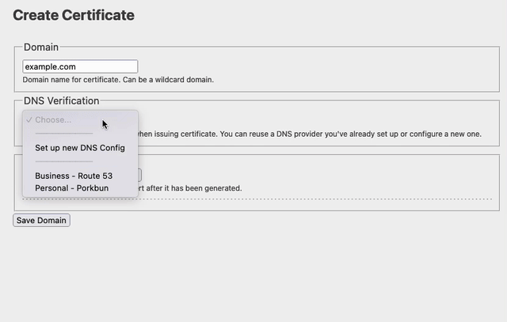

Manage SSL Certs without the fluff.
November 2023
For some reason, managing SSL certs is still a pain in the year 2023. Certmaster fixes that
with the first open-source tool that automates isuing certs and installing
to destinations.
The Problem
- HTTP validation doesn't work behind a load balancer.
- DNS validation by hand is extremely tedious.
- Once you have the cert, you still need to manually upload it to
servers or LBs.
- Web hosts make you to use their DNS if you want automatic
cert renewal.
The Solution
- This project, poundifdef/certmaster,
is the
first
tool that uses DNS to automatically validate certificates and upload to destinations.
- https://www.certmaster.dev, in beta,
offers a paid service for managing certs and renewal.
- Certmaster supports 100+ DNS providers due to the excellent
go-acme/lego
library and a growing list of destinations.
Interested?
- Email me: jay@certmaster.dev
- Code: It is easy to add new destinations.
We want to support as many as possible. Github issues and stars help
too.
- Preorder: I'm validating whether this service
will be commercially viable and plan to launch in February 2024.
A $10 preorder
would go a long way towards proving there is
customer interest.
Preview
This is a current prototype for the cert manager:
